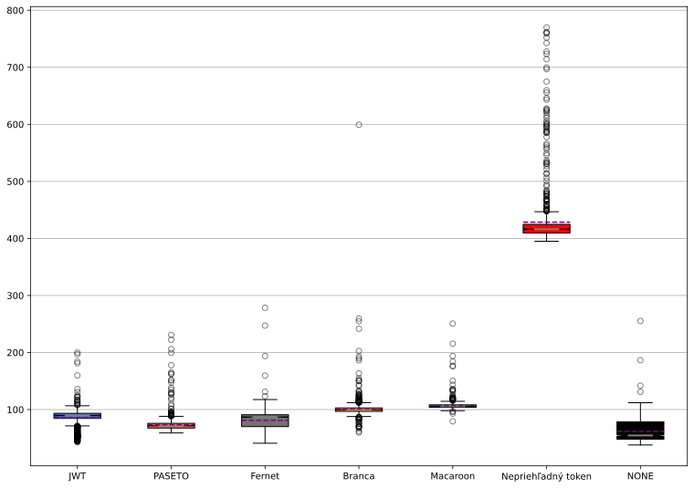
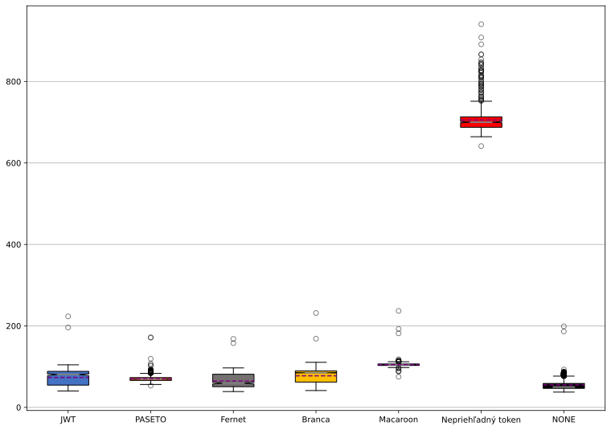
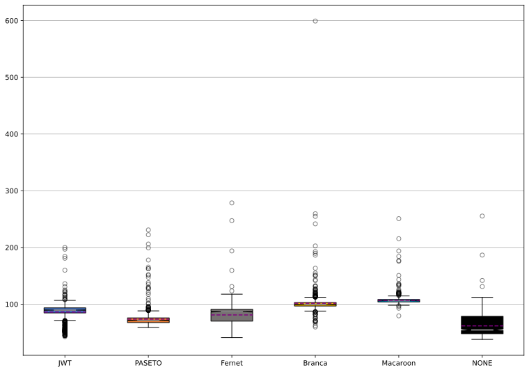
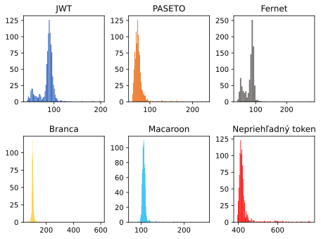
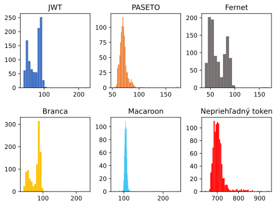
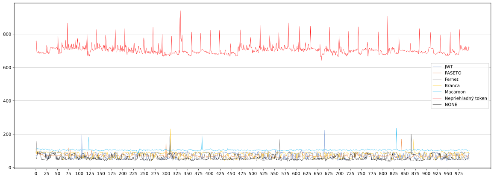
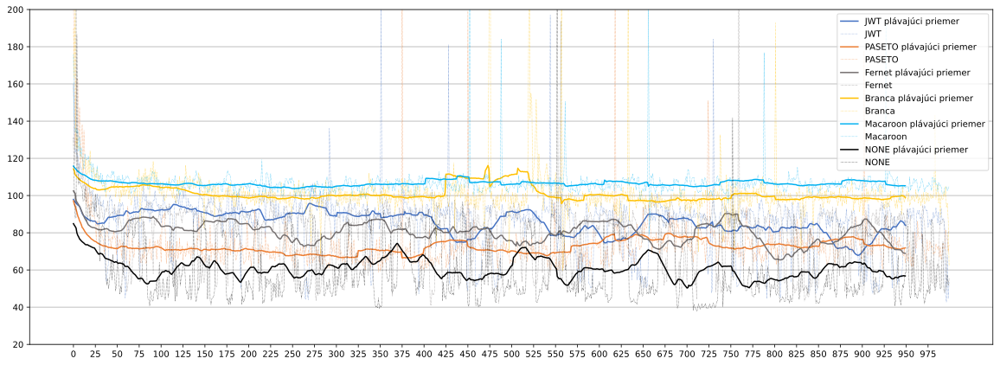
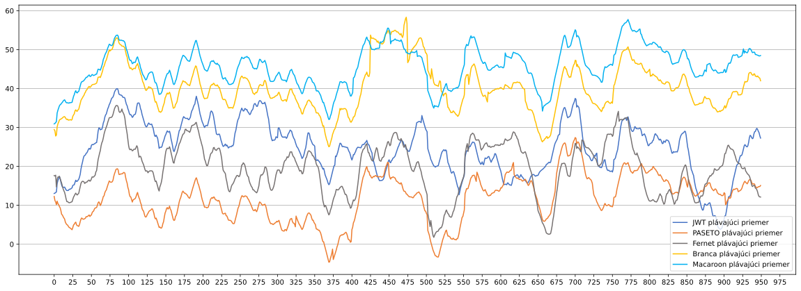
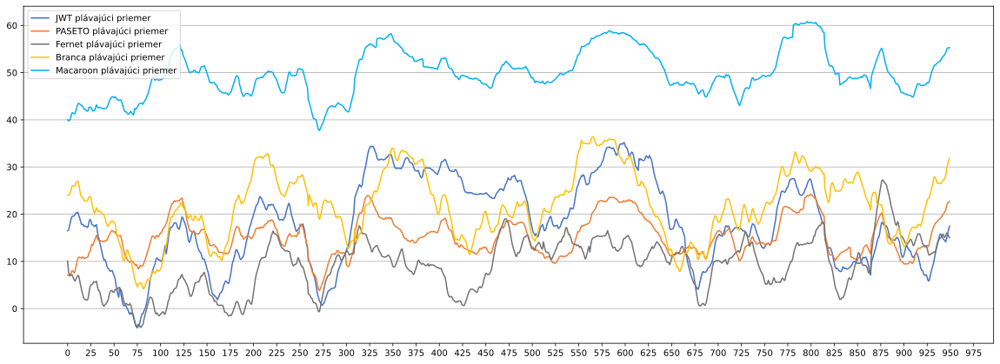

Každý graf je vytvorený z dvoch datasetov - čas prihlasovacej požiadavky (vytvorenie tokenu), čas požiadavky s tokenom (validácia tokenu). Pri každom grafe je uvedený najprv graf z merania vytvorenia tokenu a potom graf z merania validácie tokenu. Všetky grafy okrem histogramov majú na ľavej osi čas v milisekundách. Histogramy majú čas v milisekundách sa dolnej osi a počet meraní na ľavej. Grafy zobrazujú dáta z 1000 meraní, každé meranie je súčtom časov 100 požiadaviek.
Krabicový graf je vhodný pre vizualizáciu rozloženia dát. Na grafe tvoria horizontálne hrany krabice prvý a tretí kvartil. Vnútri krabice je plnou čiarou znázornený medián a bodkovanou čiarou priemer. Z krabice vystupujú takzvané fúzy. Hranice týchto fúzov sú vypočítané ako 1,5-násobok medzikvartilového rozpätia (3. kvartil mínus 1. kvartil). Body, ktoré sú mimo týchto fúzov, sú považované za odľahlé a na grafe sú znázornené ako kružnice.
Keď do grafu vložíme všetky dáta nie je veľmi prehľadný, lebo nepriehľadný token je výrazne pomalší ako ostatné tokeny



Ďalším vhodným spôsobom pre zobrazenie rozloženia dát je histogram


Čiarový graf zobrazuje priamo namerané hodnoty a ich vývoj medzi meraniami.


Plávajúci priemer je zobrazený plnou čiarou a je vypočítaný ako priemer 50 po sebe idúcich meraní. Čiarkované čiary zobrazujú všetky hodnoty.

Merania s NONE, predstavujú merania požiadaviek bez tokenu. Predstavujú teda čas, ktorý trvá samotná réžia okolo meraní a spracovávaní požiadaviek. Tieto merania sú odpočítané od všetkých meraní. Tento graf je vhodný na porovnanie času vytvorenia tokenu a času validácie tokenu medzi tokenmi.


Graf slúži na porovnanie priemernej rýchlosti tokenov. V legende sú uvedené presné hodnoty priemerov.